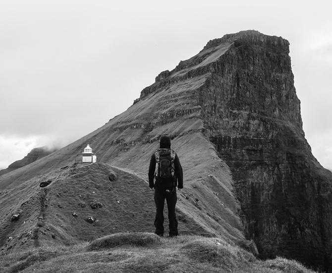
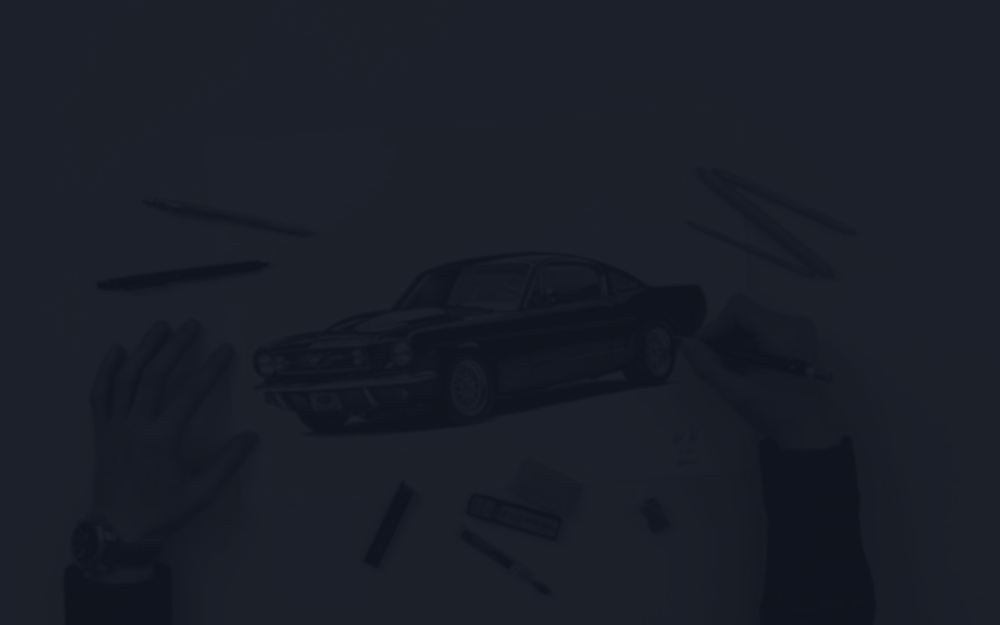
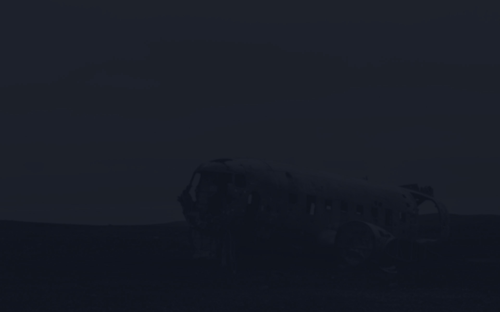
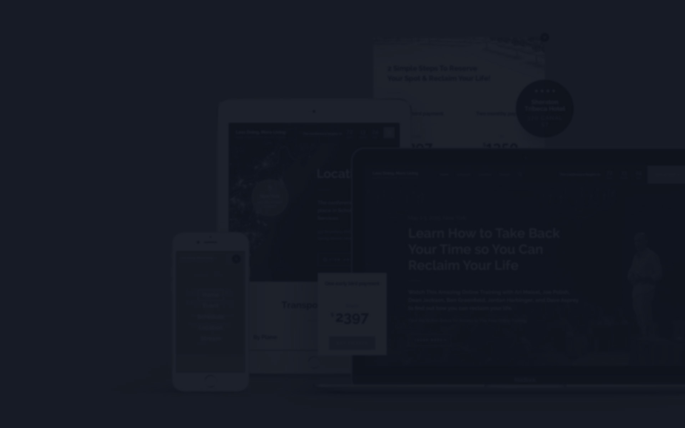
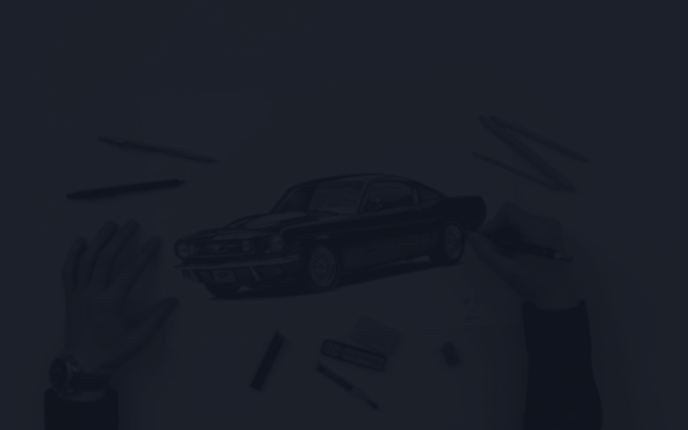
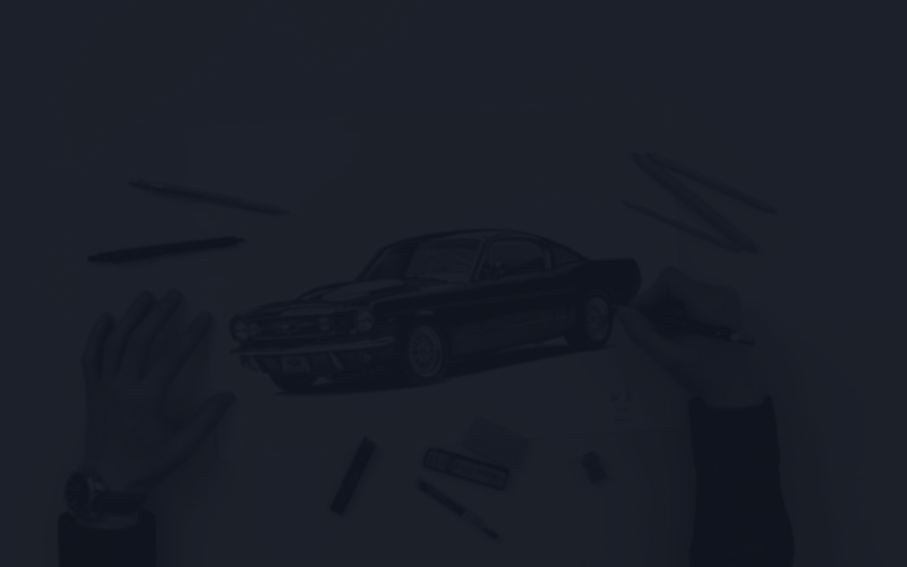
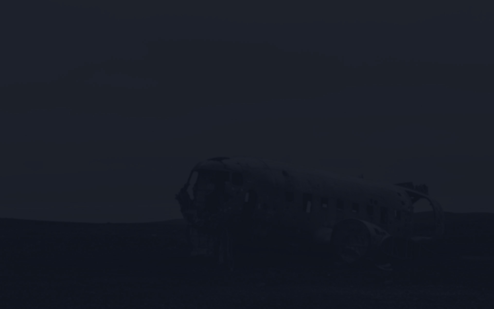
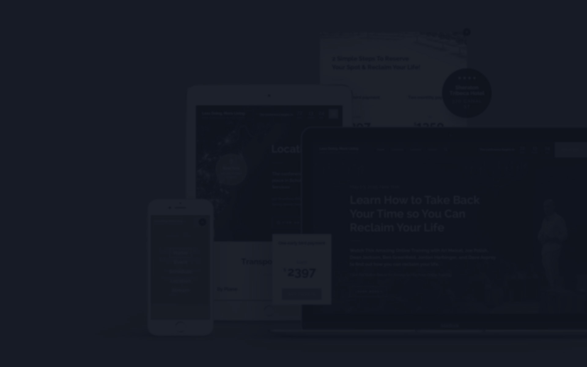
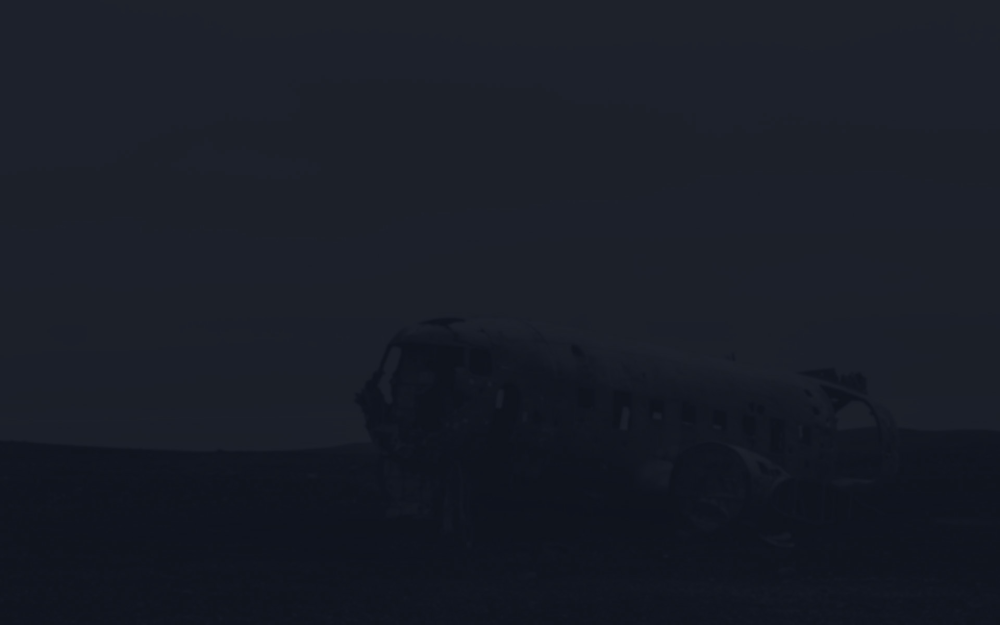
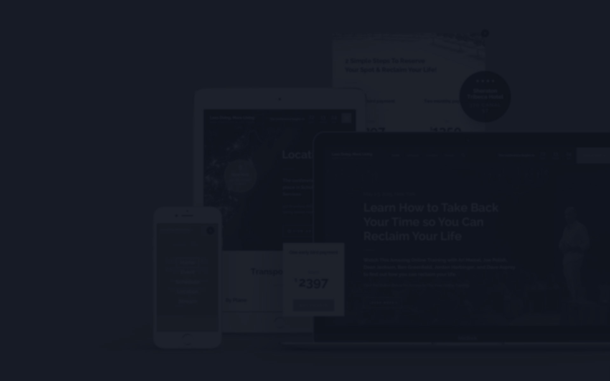

icon_arrow_down
icon_arrow_left
icon_arrow_link--thin
icon_arrow_link
icon_arrow_right
icon_arrow_up
icon_button_check
icon_button_loading
icon_button_mail
icon_heart
icon_instagram
icon_marker
icon_notification_error
icon_select_gray
icon_select_new-black
Logo
Close
Menu
Projects
About me
Contact
Dribbble
Instagram
Behance
Logo
Welcome
Wait a bit
Logo
Menu
Contact me
Solomiia Artemchuk
Website and user interface designer
Over the past 9 years, as an art director and designer, I’ve worked with big companies and up-and-coming startups to successfully help them reach their full potential and attract new customers.
View Projects
or
Read About Me
Selected projects
Case studies
new
2018 — 2023
Basic UX — design resources for InVision Studio
View Case Study
2018 — 2023
Basic UX — design resources for InVision Studio
View Case Study
2017
Triniso — responsive eCommerce website design
View Case Study
2017
Triniso — responsive eCommerce website design
View Case Study
2017
Symova — responsive website design
View Case Study
2017
Symova — responsive website design
View Case Study
2016 — 2018
PMR — online platform & website design
View Case Study
2016 — 2018
PMR — online platform & website design
View Case Study
2016
Sonicsmith — responsive website design
View Case Study
2016
Sonicsmith — responsive website design
View Case Study
2015
Less Doing, More Living — responsive website design
View Case Study
2015
Less Doing, More Living — responsive website design
View Case Study
Photography & drawings
Personal projects
new
2023
Iceland — landscapes & vistas
View Project
2023
Iceland — landscapes & vistas
View Project

2013 — 2023
Photography
View Project
2013 — 2023
Photography
View Project
2008 — 2010
Drawings
View Project
2008 — 2010
Drawings
View Project
What's new?
Latest on Instagram
Loading Instagram posts...
Need a designer?
Let’s work
together

 
This is the free demo result. For a full version of this website, please go to
Website Downloader


 

 


